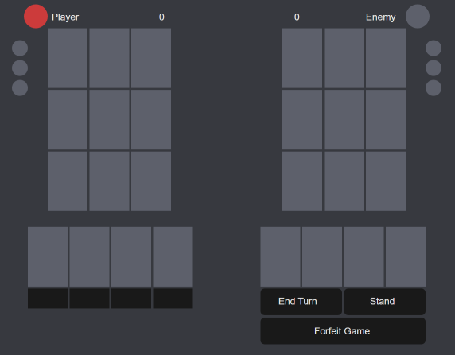
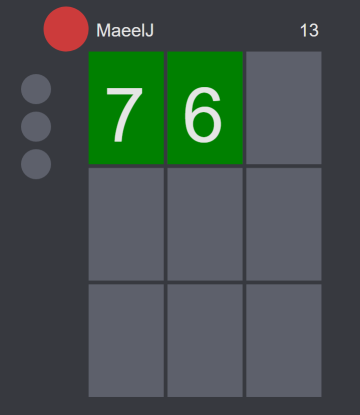
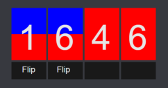
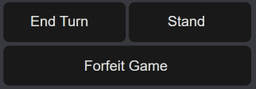

How To Play Pazaak
At the request of my friends during playtesting (because apparently I'm terrible at explaining) I have created this how to play page which will hopefully make it easier to understand for those who aren't familiar
The Goal
The goal in Pazaak is to get the value of cards on your table as close to 20 as possible without going over. While very similar to blackjack, it isn't blackjack, stop trying to get to 21. It's 20 in Pazaak! If both players end the set with a value less than 20, the player with the higher value wins. If there is a tie, no points are earned. The first player to win 3 sets wins the game. While normally a gambling game, this site plays by Republic Senate Rules. As explained by everyone's favorite Pazaak player Atton Rand:
"All right, but I'm out of credits, so it's Republic Senate rules. That's where we waste a lot of time trading cards and trying to beat each other, but in the end nobody wins, everybody loses, and nobody accomplishes anything. It's like stalemate, except the goal is to pass time until the audience gets bored and leaves."
The Game Board
Pictured above is the empty game board. The large circle by each name is the turn indicator, and lights up to show whose turn it is. The three smaller circles are the set lights. When a player wins a set, they earn a point and one of those will light up. When a player earns 3 points, all 3 of their set lights will be on and they will have won the game. The table on the left is yours, the table on the right is your enemies.
Your table is 9 card slots that are filled during a set. The number at the top is the total value of your table, the sum of all your played cards.
The 4 cards below your table are your hand. These are dealt at the start of the game, and you will not be dealt any additional cards at any point. There are 3 types of cards that can currently appear in your hand:
Blue Cards
These cards are positive and behave as normal numbers, the same as the green cards dealt by the table.
Red Cards
These cards are negative and subtract from your sum. For example, if you bust, these can be played to get back into the valid range
Switch Cards
These cards are both red and blue, with a 'Flip' button appearing beneath them. They will play as a red or blue card depending on which color is facing up at the time the card is played.
The 4 cards beneath your enemy's table are their hand. You can see the number of cards they have, but they all appear black and you can not see their values until your opponent plays their card.
In addition to the cards playable from your hand, there are only 3 controls. These buttons are only clickable during your turn. End Turn will pass the turn to the other player, and leave you open to take another turn. Stand will end your turn and finish for the set, which is to say that you are locking in your table at your current value. This will also happen automatically if you end your turn with a bust (over 20) or with exactly 20. Forfeit will end the game and give the win to the opposing player.
History
Alright alright I'll get down to it and explain where the game and all the terminology around it comes from. Pazaak was a card game originally created as a mini game for the 2003 video game Star Wars: Knights of the Old Republic (KotOR) and then slightly expanded upon in the 2004 sequel Star Wars: Knight of the Old Republic II: The Sith Lords (KotORII). It's never been officially released as a standalone game, but individuals have made unoffficial versions of the game like this available online over the years. And to the dismay of Pazaak fans everywhere, a playable version of Pazaak was cut from SWTOR, making KotORII in 2004 the last official playable version of Pazaak. Of course, with the impending release of the KotOR Remake, Pazaak's return may finally be upon us...